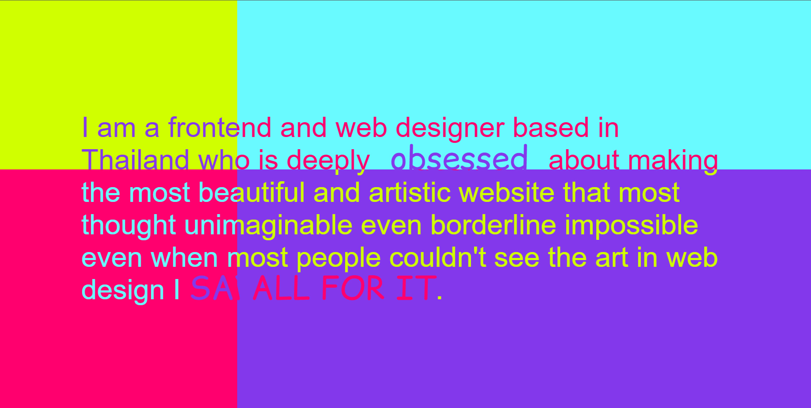

1) What was the first thing you paid attention to when interacting with the experience?
The neon colour palette, and the way my mouse interacted with the colour, and text on the screen.
I paid more attention to the interaction than I did to what the text was conveying, and I was seeing how I could combine each changing word by moving my mouse.
2) Spend two minutes with the experience and create a list of each of your discrete actions.
Almost every interaction is a hover interaction.
- Moving the mouse changes the position of four quarters of the screen, which are differentiated by colour palette and the changing word in each.
- Hovering over the centre triangle on the next screen causes the triangle to flip 180 degrees and for the text to reverse its positioning in the sentence, from “div center Perfectly” to “Perfectly center div”. The text stays perfectly within the triangle.
- Pixel displacement effect: Hovering over a pixelated image of what I think is a mountain causes the pixels to change position and smoothly float out of the way of your mouse. The effect is very loose and the pixels move like jelly. The movement seems to happen to all pixels, but the intensity depends on distance from the mouse.
- Highlighted text's highlight changes colour over time.
- Hovering over the designer's name switches the placement of shared letters between first and last name. The O spins in the same place. The letters change angle slightly after the animation, except for the T and A next to the O.
- Hovering over “FRONTEND & DESIGN” switches the position of “FRONTEND” and “DESIGN” while the “&” rolls backwards into its new position. The letters change angle slightly, and text colour changes from white to pink.
- Hovering over “FEEL FREE” switches the placement of common letters between the words. L and R stay in position. The letters change angle slightly, and the text colour changes from white to blue.
- Hovering over “TO CONTACT ME” makes each letter spin rapidly. Every second letter is lowered while the rest are raised. The spacing and width is also increased. The text changes colour from white to light blue.
- Hovering over “EMAIL” switches the position and orientation of “E” and “M” by slowly rolling so they replace each other while still reading “email”. The yellow arrow slides over and changes colour to light blue. When not hovering, it returns to yellow and original position.
- Hovering over “LINE” makes each letter rotate. The light blue arrow slides over and changes colour to yellow. When not hovering, it returns to light blue and its original position.
3) What part of the experience did you spend the most time engaging with?
The "pixel displacement effect”, as well as the animation for "TO CONTACT ME”. They were most engaging for me because of the amount of movement within them. The pixel displacement effect had the most variety in interaction, and was therefore most engaging. You could change the position of your mouse, speed and direction which would change how the pixels would interact. The “TO CONTACT ME” animation was really satisfying, due to how fast the characters spun.
4) What was the most common action in your two minute interaction with the experience?
The hovering action was used for everything except for the highlighting colour change, but that's hardly an interaction.
There was no interaction to do with clicking, even for the clickable texts. They opened instantly without any animation or change.
Unfortunate since I'm sure the viewer of this website would be looking for a variety of skills and expertise for web design.
5) What is your impression of the intended primary goal of the interactive experience?
To present the designers creative coding skills, and expertise in the field. Especially with the “perfectly center div”, clearly being a reference to coding. Overall, it was a meta portfolio, showcasing their skills in their area of expertise, not through portfolio work, but the website itself.
6) How does the interactive experience communicate this primary goal?
It effectively showcases the skills of the designer, in being able to create animations, and play with movement and colour. Put very simply, their goal is to showcase their skills, thereby creating these interactions, they achieve this goal by showcasing their skills.
7) What is your impression of how the experience should be interacted with over time?
Overall, I'd expect a user to interact with the experience quite briefly. As each interaction is quite short and minimal, and is engaging insofar as seeing how each section reacts to hovering, I'd expect a user to only engage briefly for 5 or fewer times for each interaction.
With the pixel displacement effect however, it is much more engaging, and I'd expect interaction for 30 seconds to a minute.
8) How does the interactive experience communicate how it should be interacted with over time?
As the experience offers immediate feedback to guide interaction, it signals that the experience is about exploration. You are unsure how hovering will affect each title and are encouraged to explore. Since the hovering interactions are very quick, and lack variation, it communicates that the experience should be interacted with briefly over time. As there are no random elements, the user is no longer curious about how an interaction will happen once they've interacted twice. Therefore their time spent interacting would be brief.
9) What other media forms does the experience reference?
The experience mainly references experimental web design and interactive art. It showcases elements of creative coding, with the visuals responding to input, in a similar way an interactive installation would (particularly with the pixel displacement effect). It also draws from motion graphics and kinetic typography, with text behaving like animated visual elements rather than static information. As mentioned, the “perfectly center div” references web development culture.
10) What does this reference/s communicate to you about how you should act?
It suggests that you should interact with the experience in a playful manner, in the same way you would with interactive art and creative coding projects. You're encouraged to experiment with your mouse movement, in order to see how the visuals respond. You are encouraged through the reference of “perfectly center div”, to think about the coding and skill behind all these interactions, rather than solely their artistic nature.
11) What does this reference/s communicate to you about how you should feel?
Similar to how you should act, you should feel curious about how the interactions were coded, and also playful while engaging with the experience. You should feel that you should treat it as a playground to explore while also thinking about the skill behind its creation and the creator.
12) What is the most frustrating part of the interaction to you?
It's frustrating with how the pixel displacement effect doesn't interact with your mouse in a satisfying way. Instead of the pixels parting for your mouse, they seem to do so slightly below it. Another frustrating part was the lack of clickable interactions, which could have been embedded within all the hover interactions. A final frustration was in the inconsistency of the animations.
13) What is the most satisfying part of the interaction?
The variety of text animations are really satisfying, especially with the rapid spinning of characters, and clever switches of letters in words.
It's satisfying because the animations are smooth, responsive and visually rewarding. The sheer playfulness of the movements and colours are rather engaging.
Website Landing Page
